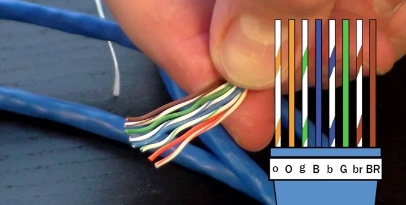

My name is Putri Maulidya, a student in grade 11 majoring in Computer and Network Engineering (TKJ). I have a strong interest in web development, networking, and digital technology. I'm always eager to learn new things and improve my skills through practice and hands-on projects.
Computer Basics
100 %
Operating System Installation
90 %
Cable Crimping (RJ45)
85 %
Mikrotik Configuration
90 %
Clothing Design Drawing
Develop creative skills in fashion design. Gain hands-on experience through idea exploration and sketching.
Playing Games
Sharpen strategic thinking and reflexes through gaming. Enjoy fun and new insights via virtual interaction.
Tinkering with Computers
Learn how hardware and software work. Enhance skills by disassembling, assembling, and experimenting with computers.
Searching for K-Drama or News Updates
Build reading and research habits. Stay informed by exploring various online sources.
In this project, I learned how to repair a PC, from checking for damage to replacing components. I also learned how to do maintenance so that the PC continues to function optimally.
"In this project, I learned how to install an operating system, starting from preparing the installation media to configuring system settings after installation. I also learned how to ensure the OS runs smoothly by installing drivers and necessary updates."
In this project, I learned how to configure a Mikrotik router, starting from setting up IP addresses, DHCP server, and NAT, to managing basic firewall rules. I also gained experience in using Winbox for easier configuration and monitoring of the network. This activity helped me understand how routing and network security work in real-world scenarios
Demo

UTP Cable Crimping
TKJ SMKN 1O MALANG
In this project, I learned how to make and crimp UTP cables, including both straight-through and crossover types. I used tools such as a cable tester, crimping tool, and RJ-45 connectors to ensure the connections worked properly. This project helped me understand importance the connectivity networks.